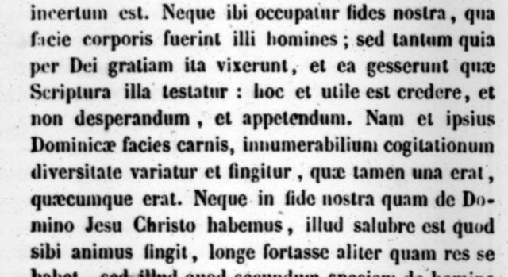

“Dominicae facies carnis” (book VIII, c. 4 § 7)
Latin: Migne, PL 42, col. 951, scan. Highlighted: the words Lecky quotes.

Quis enim legentium vel audientium quæ scripsit apostolus Paulus, vel quæ de illo scripta sunt, non fingat animo et ipsius Apostoli faciem, et omnium quorum ibi nomina commemorantur? Et cum in tanta hominum multitudine quibus illæ Litteræ notæ sunt, alius aliter lineamenta figuramque illorum corporum cogitet, quis propinquius et similius cogitet, utique incertum est. Neque ibi occupatur fides nostra, qua facie corporis fuerint illi homines; sed tantum quia per Dei gratiam ita vixerunt, et ea gesserunt quæ Scriptura illa testatur … Nam et ipsius Dominicæ facies carnis, innumerabilium cogitationum diversitate variatur et fingitur, quæ tamen una erat, quæcumque erat. Neque in fide nostra quam de Domino Jesu Christo habemus, illud salubre est quod sibi animus fingit, longe fortasse aliter quam res se habet …
For who, reading or hearing what the apostle Paul wrote, or what was written about him, does not picture in his mind the face of the Apostle himself, and of all those whose names are mentioned there? And since, among so great a multitude of people to whom those writings are known, each imagines the features and shape of their bodies differently, it is quite uncertain who imagines them more nearly and more truly. Nor is our faith concerned there with what bodily face those men had, but only with this, that by the grace of God they so lived and did the things that Scripture testifies … For the face of the Lord’s flesh itself is varied and imagined through the diversity of countless conceptions, though it was one, whatever it was. Nor, in the faith we have concerning the Lord Jesus Christ, is what the mind pictures for itself the saving thing, perhaps far other than the reality …
“Et hoc penitus ignoramus”: Paul’s face, the Virgin’s, Lazarus’s (c. 5 §§ 7–8)
Latin: Migne, PL 42, col. 952, same scan, right column.
… Neque enim novimus faciem virginis Mariæ … Nec quibus membrorum lineamentis fuerit Lazarus, nec Bethaniam, nec sepulcrum lapidemque illum quem removeri jussit cum eum resuscitaret, vidimus … Utrum autem illa facies Mariæ fuerit quæ occurrerit animo cum ista loquimur aut recordamur, nec novimus omnino, nec credimus. Itaque hic salva fide licet dicere, Forte talem habebat faciem, forte non talem …
… An secundum specialem generalemve notitiam, secundum quam diligimus apostolum Paulum? Qui etiam si non ea facie fuit quæ nobis occurrit de illo cogitantibus, et hoc penitus ignoramus, novimus …
… For we do not know the face of the Virgin Mary … Nor have we seen what bodily features Lazarus had, nor Bethany, nor the tomb and the stone he ordered to be removed when he raised him … Whether the face of Mary was the one that comes to mind when we speak or think of these things, we neither know nor believe at all. So here it is permitted, without harm to the faith, to say: perhaps she had such a face, perhaps not …
… Or [do we love the Trinity] by the specific or general notion by which we love the apostle Paul? Who, even if he did not have the face that occurs to us when we think of him, and of this we are wholly ignorant, we know …
Lecky’s “Qua fuerit ille (Christus) facie nos penitus ignoramus” (“what face he, Christ, had we are wholly ignorant”) borrows these words but applies them to Christ; the sentence is not in the text.
Backlinks
Every place in Rationalism in Europe that links to this page (generated automatically when the site is built).
- Chapter III: note 28